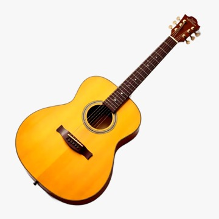

Urysses Casado nasceu na França, onde teve seus primeiros contatos com a música ainda jovem. Apesar de ter uma vida estável por lá, sempre sentiu que faltava algo: um propósito mais profundo, algo que realmente tocasse pessoas de forma verdadeira. Foi essa inquietação que o fez olhar para fora e, em uma reviravolta corajosa, decidiu recomeçar no Brasil. Ao chegar ao interior de São Paulo, Urysses conheceu **Alexandre Barbosa**, com quem compartilhou a paixão pela música e o desejo de usar o violão como ferramenta de transformação. A conexão foi imediata. Apesar das diferenças culturais e de origem, os dois falavam a mesma língua quando o assunto era a missão de ensinar com alma, acolher com respeito e transformar com arte. A mudança para o Brasil não apenas transformou a vida de Urysses — ela **deu novo sentido a tudo o que ele viveu até ali**. Ao começar a dar aulas, descobriu o poder real da música na vida das pessoas, principalmente naquelas que, como ele, buscavam um novo começo. Ao lado de Alexandre, fundou a Escola de Violão, que mais tarde se tornaria a Estúdio Harmoniques.  ==0$ Hoje, Urysses é um exemplo vivo de que seguir o coração pode levar a lugares incríveis. Ensinando violão com empatia, paciência e técnica, ele inspira alunos a acreditarem em si mesmos — assim como ele um dia acreditou que podia recomeçar, e mudou tudo.
Voltar para a página.